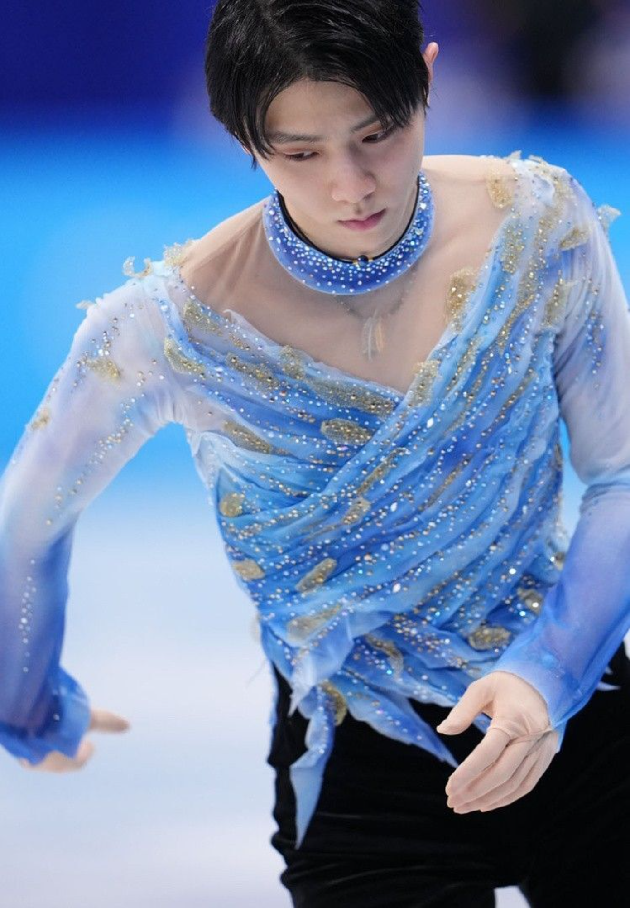
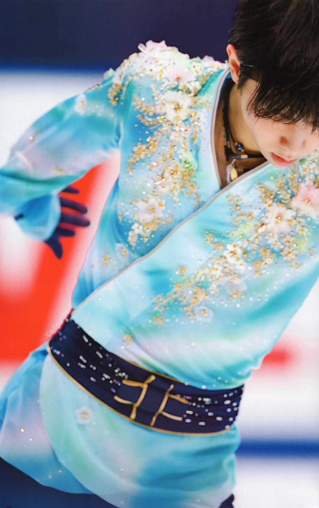

"I try to find challenges after every competition and overcome them the next time."


All about a Japanese figure skater who has broken world records twelve times within a decade.
Hanyu Yuzuru, (born December 7, 1994, Sendai, Japan), Japanese figure skater who at the 2014 Winter Games in Sochi, Russia, became the first Japanese man to win an Olympic gold medal in figure skating. He added a second Olympic gold four years later at the 2018 Winter Games in P’yŏngch’ang, South Korea.
Hanyu began figure skating when he was four years old. He became serious about pursuing the sport competitively after watching on television the heavily hyped duel between Russian skaters Aleksey Yagudin and Yevgeny Plushchenko at the 2002 Winter Olympics in Salt Lake City, Utah. Hanyu, modeling himself after Plushchenko and American Johnny Weir, eventually mastered such difficult elements as the Biellmann spin (he was one of the relatively few male skaters who performed the move) and the quadruple jump. At the end of 2009, Hanyu won the gold medal at the Junior Grand Prix final in Tokyo, and the following year he claimed gold at the 2010 junior world championships.
Having been called one of the greatest figure skaters in history by many sport writers, commentators, and skaters for his well-rounded skills, achievements, popularity, and impact on the sport, Hanyu is the first men's singles skater to achieve a Super Slam, having won all major competitions in both his senior and junior careers.
He has broken world records 19 times—the most times among singles skaters since the introduction of the ISU Judging System in 2004. He is the first man to have received over 100 points in the men's short program, over 200 points in the men's free skate, and over 300 total points in competition. Upon winning his first Olympic title, Hanyu became the first Asian men's singles skater to win the Olympic gold. At nineteen years old, he was the youngest male skater to win the Olympic title since Dick Button in 1948. In 2018, he became the first man to win two consecutive Olympic gold medals since Button's back-to-back titles in 1948 and 1952. At the 2016 CS Autumn Classic International, Hanyu became the first skater in history to successfully land a quadruple loop in a competition. He is the first men's singles skater from Asia to win multiple World Championships.
He set a record in his first Olympic appearance, scoring over 100 points in the short program.
He was also the first to score over 200 in the men's free skate.
He holds 21 of the top 25 highest-scored sompetitive triple axels.
Was the first to land a quardruple loop jump in competitive history.
At just 19, he became the youngest to win Olympic gold since Dick Button in 1948.
Only male figure skater to accomplish the "Super Slam".
Two-time Olympic champion (2014, 2018)
Two-time World champion (2014,2017)
Four-time Grand Prix Final champion (2013–2016)
The 2020 Four Continents champion
The 2010 World Junior champion
The 2009–10 Junior Grand Prix Final champion
Six-time Japanese national champion (2012–2015, 2020–2021)
The first men's singles skater to achieve a Super Slam


